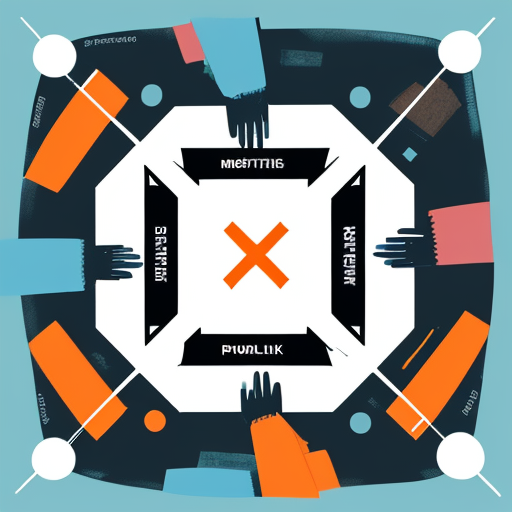
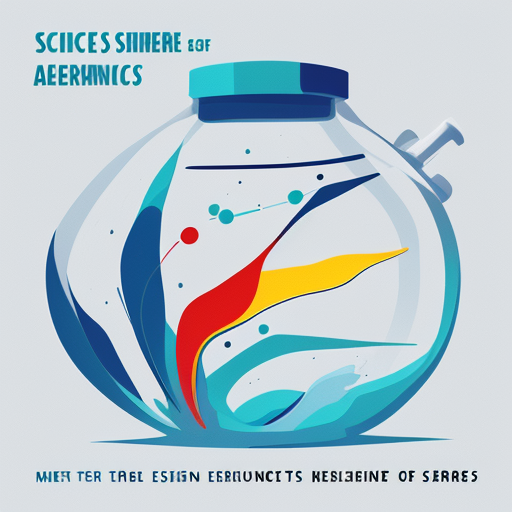
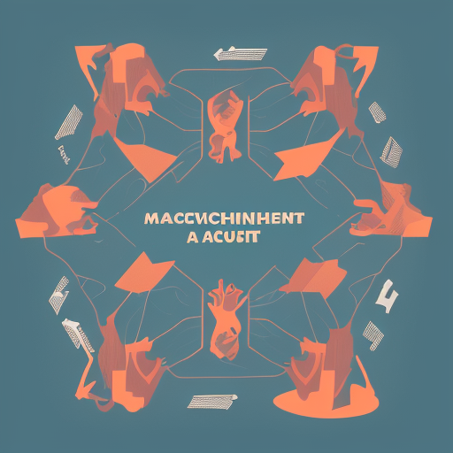
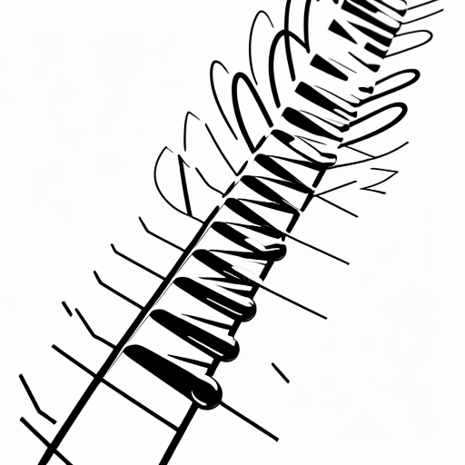
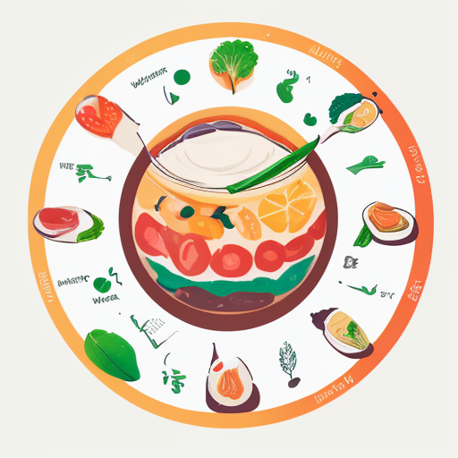
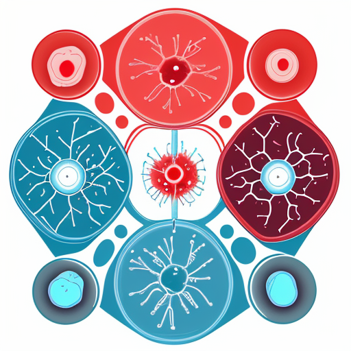
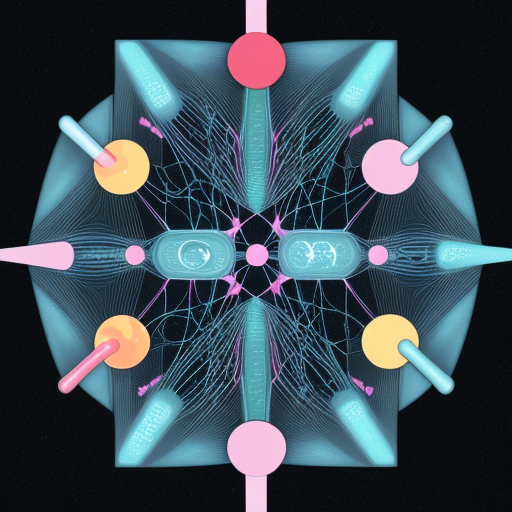

Book Summaries
101 Questions to Ask Before You Get Married by H. Norman Wright
Essential conversations for premarital couples
H. Norman Wright
6 min
168 Hours by Laura Vanderkam
You have more time than you think - how to make the most of it
Laura Vanderkam
5 min
A Mind for Numbers by Barbara Oakley
How to excel at math and science by learning how to learn
Barbara Oakley
6 min
A New Earth by Eckhart Tolle
Awakening to your life’s purpose through consciousness
Eckhart Tolle
7 min
A Random Walk Down Wall Street by Burton Malkiel
The time-tested strategy for successful investing
Burton Malkiel
6 min
A Whack on the Side of the Head by Roger von Oech
How you can be more creative through mental locks
Roger von Oech
5 min
ACT with Love by Russ Harris
Stop struggling, reconcile differences, and strengthen your relationship
Russ Harris
6 min
After the Affair by Janis A. Spring
Healing the pain and rebuilding trust after infidelity
Janis A. Spring
5 min
After the Ecstasy, the Laundry by Jack Kornfield
How the heart grows wise on the spiritual path
Jack Kornfield
5 min
Asking the Right Questions by M. Neil Browne and Stuart M. Keeley
A guide to critical thinking and analysis
M. Neil Browne and Stuart M. Keeley
5 min
Atlas of the Heart by Brene Brown
Mapping meaningful connections and the language of human experience
Brene Brown
5 min
Atomic Habits by James Clear
Comprehensive guide to building good habits and breaking bad ones through small changes
James Clear
5 min
Attached by Amir Levine and Rachel Heller
The science of adult attachment and how it can help you find and keep love
Amir Levine and Rachel Heller
5 min
Authentic Happiness by Martin E.P. Seligman
Using positive psychology to realize your potential
Martin E.P. Seligman
5 min
Autobiography of a Yogi by Paramahansa Yogananda
A spiritual master’s extraordinary journey
Paramahansa Yogananda
6 min
Be Here Now by Ram Dass
A guide to consciousness and spiritual practices
Ram Dass
6 min
Becoming Emotionally Whole by Charles Stanley
Change your thoughts to be happier and healthier
Charles Stanley
6 min
Being Logical by D.Q. McInerny
A guide to good thinking and reasoning skills
D.Q. McInerny
4 min
Better Relationships by Sarah Rozenthuler
Practical ways to make your relationships work
Sarah Rozenthuler
4 min
Better Than Before by Gretchen Rubin
Mastering the habits of our everyday lives
Gretchen Rubin
6 min
Big Magic by Elizabeth Gilbert
Creative living beyond fear and embracing inspiration
Elizabeth Gilbert
5 min
Blue Mind by Wallace J. Nichols
The surprising science that shows how being near water makes us happier
Wallace J. Nichols
5 min
Blue Ocean Strategy by W. Chan Kim and Renee Mauborgne
How to create uncontested market space and make competition irrelevant
W. Chan Kim and Renee Mauborgne
5 min
Born to Run by Christopher McDougall
A hidden tribe, superathletes, and the greatest race the world has never seen
Christopher McDougall
5 min
Boundaries by Henry Cloud and John Townsend
When to say yes, how to say no to take control of your life
Henry Cloud and John Townsend
5 min
Boundaries in Marriage by Henry Cloud and John Townsend
Understanding and establishing healthy boundaries in marriage
Henry Cloud and John Townsend
5 min
Boundless by Ben Greenfield
Upgrade your brain, optimize your body, and defy aging
Ben Greenfield
5 min
Brain Maker by David Perlmutter
The power of gut microbes to heal and protect your brain
David Perlmutter
5 min
Breath by James Nestor
The new science of a lost art of breathing
James Nestor
5 min
Building Emotional Intelligence by Linda Lantieri
Techniques to cultivate inner strength in children
Linda Lantieri
5 min
Built to Last by Jim Collins and Jerry I. Porras
Successful habits of visionary companies
Jim Collins and Jerry I. Porras
5 min

Bulletproof Problem Solving by Charles Conn and Robert McLean
The one skill that changes everything
Charles Conn and Robert McLean
5 min
Business Model Generation by Alexander Osterwalder
A handbook for visionaries, game changers, and challengers
Alexander Osterwalder
5 min
Call Sign Chaos by Jim Mattis
Learning to lead
Jim Mattis
5 min
Captivate by Vanessa Van Edwards
The science of succeeding with people
Vanessa Van Edwards
6 min
Care of the Soul by Thomas Moore
A guide for cultivating depth and sacredness in everyday life
Thomas Moore
6 min
Change Your Thoughts, Change Your Life by Wayne W. Dyer
Living the wisdom of the Tao
Wayne W. Dyer
5 min
Change by Design by Tim Brown
How design thinking transforms organizations and inspires innovation
Tim Brown
5 min
Changing Minds by Howard Gardner
The art and science of changing our own and other people’s minds
Howard Gardner
5 min
Choose FI by Chris Mamula, Brad Barrett, and Jonathan Mendonsa
Your blueprint to financial independence
Chris Mamula, Brad Barrett, and Jonathan Mendonsa
5 min
Clear Thinking by Jared Horvath
Turning ordinary moments into extraordinary outcomes
Jared Horvath
5 min
Come as You Are by Emily Nagoski
Understanding female sexuality and enhancing intimate relationships
Emily Nagoski
5 min
Common Sense on Mutual Funds by John C. Bogle
New imperatives for the intelligent investor
John C. Bogle
5 min
Common Stocks and Uncommon Profits by Philip Fisher
Classic guide to intelligent stock market investment strategy
Philip Fisher
6 min
Communication in Marriage by Marcus and Ashley Kusi
Practical ways to improve communication in your marriage
Marcus and Ashley Kusi
6 min
Company of One by Paul Jarvis
Why staying small is the next big thing for business
Paul Jarvis
6 min
Compelling People by John Neffinger and Matthew Kohut
The hidden qualities that make us influential
John Neffinger and Matthew Kohut
5 min
Conceptual Blockbusting by James L. Adams
A guide to better ideas
James L. Adams
5 min
Conscious Loving by Gay Hendricks and Kathlyn Hendricks
The journey to co-commitment
Gay Hendricks and Kathlyn Hendricks
6 min
Contagious by Jonah Berger
Why things catch on and how to make ideas spread
Jonah Berger
5 min
Cracking Creativity by Michael Michalko
The secrets of creative genius
Michael Michalko
5 min
Creative Confidence by Tom Kelley and David Kelley
Unleashing the creative potential within us all
Tom Kelley and David Kelley
5 min
Creativity by Mihaly Csikszentmihalyi
Flow and the psychology of discovery and invention
Mihaly Csikszentmihalyi
5 min
Creativity, Inc. by Ed Catmull
Overcoming the unseen forces that stand in the way of true inspiration
Ed Catmull
5 min
Critical Thinking: Tools for Taking Charge of Your Learning and Your Life by Richard Paul and Linda Elder
Comprehensive framework for developing critical thinking skills
Richard Paul and Linda Elder
5 min
Crossing the Chasm by Geoffrey A. Moore
Marketing and selling disruptive products to mainstream customers
Geoffrey A. Moore
5 min
Crucial Conversations by Kerry Patterson, Joseph Grenny, Ron McMillan, Al Switzler
Tools for talking when stakes are high
Kerry Patterson, Joseph Grenny, Ron McMillan, Al Switzler
5 min
Damn Good Advice by George Lois
For people with talent who want to succeed
George Lois
5 min
Dare to Lead by Brene Brown
Brave work, tough conversations, whole hearts
Brene Brown
5 min
Debt-Free Forever by Gail Vaz-Oxlade
Take control of your money and your life
Gail Vaz-Oxlade
6 min
Decision Making for Leaders by Thomas L. Saaty
The Analytic Hierarchy Process for decisions in a complex world
Thomas L. Saaty
6 min
Decision Quality by Carl Spetzler
Value creation from better business decisions
Carl Spetzler
4 min
Decision Theory by Martin Peterson
A formal approach to decision making under uncertainty
Martin Peterson
4 min
Decisive by Chip Heath and Dan Heath
How to make better choices in life and work using a four-step process
Chip Heath and Dan Heath
5 min
Deep Work by Cal Newport
Rules for focused success in a distracted world and achieving peak productivity
Cal Newport
5 min
Delivering Happiness by Tony Hsieh
A path to profits, passion, and purpose
Tony Hsieh
5 min
Design-Driven Innovation by Roberto Verganti
Changing the rules of competition by radically innovating
Roberto Verganti
5 min
Difficult Conversations by Douglas Stone, Bruce Patton, Sheila Heen
How to discuss what matters most
Douglas Stone, Bruce Patton, Sheila Heen
5 min
Digital Minimalism by Cal Newport
Choosing a focused life in a noisy world
Cal Newport
5 min
Dirty Genes by Ben Lynch
A breakthrough program to treat the root cause of illness
Ben Lynch
6 min
Drive by Daniel H. Pink
The surprising truth about what motivates us
Daniel H. Pink
5 min
Drive by Daniel H. Pink
The surprising truth about what motivates us beyond rewards and fear
Daniel H. Pink
5 min
Eat That Frog! by Brian Tracy
21 great ways to stop procrastinating and get more done in less time
Brian Tracy
5 min
Eight Dates by John Gottman and Julie Schwartz Gottman
Essential conversations for a lifetime of love
John Gottman and Julie Schwartz Gottman
5 min
Emotional Agility by Susan David
Get unstuck, embrace change, and thrive in work and life
Susan David
5 min
Emotional First Aid by Guy Winch
Practical strategies for treating failure, rejection, guilt, and other everyday psychological injuries
Guy Winch
5 min
Emotional Freedom by Judith Orloff
Liberate yourself from negative emotions and transform your life
Judith Orloff
5 min
Emotional Intelligence 2.0 by Travis Bradberry and Jean Greaves
Strategies for increasing your emotional intelligence with the four core skills
Travis Bradberry and Jean Greaves
5 min
Emotional Intelligence and Mental Health by James Parker
The link between EQ and psychological well-being
James Parker
5 min
Emotional Intelligence at Work by Hendrie Weisinger
The untapped edge for success
Hendrie Weisinger
5 min
Emotional Intelligence by Daniel Goleman
Why it can matter more than IQ
Daniel Goleman
5 min
Emotional Intelligence for Children by Lawrence E. Shapiro
A guide to developing children’s EQ
Lawrence E. Shapiro
6 min
Emotional Intelligence for Dummies by Steven J. Stein
A practical guide to improving your EQ
Steven J. Stein
6 min
Emotional Intelligence for Project Managers by Anthony Mersino
The people skills you need to achieve outstanding results
Anthony Mersino
5 min
Emotional Intelligence for Sales Success by Colleen Stanley
Connect with customers and get results
Colleen Stanley
6 min
Emotional Intelligence in Education by Kateryna Keefer
Integrating research with practice
Kateryna Keefer
5 min
Emotional Intelligence in the Digital Age by James Bradford
Navigating emotions in a technology-driven world
James Bradford
5 min
Emotional Intelligence: Why It Can Matter More Than IQ by Daniel Goleman
The groundbreaking book that redefined intelligence and success
Daniel Goleman
4 min
Emotional Value by Janelle Barlow and Dianna Maul
Creating strong bonds with your customers
Janelle Barlow and Dianna Maul
5 min
Emotional and Sexual Intimacy in Marriage by Marcus and Ashley Kusi
How to connect or reconnect with your spouse
Marcus and Ashley Kusi
6 min
Essentialism by Greg McKeown
The disciplined pursuit of less but better, focusing on what truly matters
Greg McKeown
6 min
Everyone Communicates, Few Connect by John C. Maxwell
What the most effective people do differently
John C. Maxwell
5 min
Exactly What to Say by Phil M. Jones
The magic words for influence and impact
Phil M. Jones
5 min
Extreme Ownership by Jocko Willink and Leif Babin
How U.S. Navy SEALs lead and win
Jocko Willink and Leif Babin
6 min
Fast Food Nation by Eric Schlosser
The dark side of the American meal
Eric Schlosser
5 min
Fiber Fueled by Will Bulsiewicz
The plant-based gut health program for weight loss
Will Bulsiewicz
5 min
Fierce Conversations by Susan Scott
Achieving success at work and in life one conversation at a time
Susan Scott
5 min
Fighting for Your Marriage by Howard J. Markman
Positive steps for preventing divorce and preserving love
Howard J. Markman
5 min
Financial Freedom by Grant Sabatier
A proven path to all the money you will ever need
Grant Sabatier
5 min
Financial Intelligence by Karen Berman and Joe Knight
A manager’s guide to knowing what the numbers really mean
Karen Berman and Joe Knight
6 min
Finding Your Own North Star by Martha Beck
Claiming the life you were meant to live
Martha Beck
6 min
First Year of Marriage by Marcus and Ashley Willis
The newlywed’s guide to building a strong foundation
Marcus and Ashley Willis
6 min
First, Break All the Rules by Marcus Buckingham
What the world’s greatest managers do differently
Marcus Buckingham
6 min
Flourish by Martin E.P. Seligman
A visionary new understanding of happiness and well-being
Martin E.P. Seligman
5 min
Flow by Mihaly Csikszentmihalyi
The psychology of optimal experience and peak performance
Mihaly Csikszentmihalyi
5 min
Flow: The Psychology of Optimal Experience by Mihaly Csikszentmihalyi
Understanding and achieving optimal experiences
Mihaly Csikszentmihalyi
5 min
Food Rules by Michael Pollan
An eater’s manual for healthy eating
Michael Pollan
5 min
Four Thousand Weeks by Oliver Burkeman
Time management for mortals
Oliver Burkeman
5 min
Free to Focus by Michael Hyatt
A total productivity system to achieve more by doing less
Michael Hyatt
6 min
Games People Play by Eric Berne
The psychology of human relationships
Eric Berne
5 min
Gamestorming by Dave Gray
A playbook for innovators, rulebreakers, and changemakers
Dave Gray
5 min
Get Anyone to Do Anything by David J. Lieberman
Never feel powerless again with psychological secrets
David J. Lieberman
5 min
Get a Financial Life by Beth Kobliner
Personal finance in your twenties and thirties
Beth Kobliner
6 min
Getting Results the Agile Way by J.D. Meier
A personal results system for work and life
J.D. Meier
4 min
Getting Things Done by David Allen
The art of stress-free productivity through effective organization and task management
David Allen
10 min
Getting the Love You Want by Harville Hendrix
A guide for couples to transform conflict into connection and intimacy
Harville Hendrix
6 min
Getting to Yes by Roger Fisher and William Ury
Negotiating agreement without giving in
Roger Fisher and William Ury
6 min
Good Habits, Bad Habits by Wendy Wood
The science of making positive changes that stick
Wendy Wood
6 min
Good to Great by Jim Collins
Why some companies make the leap and others don’t
Jim Collins
6 min
Grit: The Power of Passion and Perseverance by Angela Duckworth
Why passion and resilience are the secrets to success
Angela Duckworth
6 min
Gut by Giulia Enders
The inside story of our body’s most underrated organ
Giulia Enders
5 min
HBR’s 10 Must Reads on Emotional Intelligence by Harvard Business Review
Essential reading on emotional intelligence in business
Harvard Business Review
5 min
Head Strong by Dave Asprey
The bulletproof plan to activate untapped brain energy
Dave Asprey
5 min
High Output Management by Andrew S. Grove
How to create and manage effective organizations
Andrew S. Grove
5 min
High Performance Habits by Brendon Burchard
How extraordinary people become that way
Brendon Burchard
5 min
His Needs, Her Needs by Willard F. Harley Jr.
Building an affair-proof marriage by meeting emotional needs
Willard F. Harley Jr.
6 min
Hold Me Tight by Sue Johnson
Seven conversations for a lifetime of love
Sue Johnson
6 min
Hooked by Nir Eyal
How to build habit-forming products
Nir Eyal
6 min
How Not to Die by Michael Greger
Discover foods scientifically proven to prevent and reverse disease
Michael Greger
5 min
How We Decide by Jonah Lehrer
The science of decision making and the brain’s two systems
Jonah Lehrer
5 min
How We Know What Isn’t So by Thomas Gilovich
The fallibility of human reason in everyday life
Thomas Gilovich
5 min
How to Decide by Annie Duke
Simple tools for making better choices based on decision science
Annie Duke
5 min
How to Make Money in Stocks by William O’Neil
A winning system in good times and bad
William O’Neil
6 min
How to Think About Analysis by Lara Alcock
Framework for developing analytical thinking skills
Lara Alcock
5 min
How to Win Friends and Influence People by Dale Carnegie
Classic guide to building meaningful relationships and influencing others positively
Dale Carnegie
7 min
Hyperfocus by Chris Bailey
How to be more productive in a world of distraction
Chris Bailey
5 min
I Will Teach You to Be Rich by Ramit Sethi
No guilt. No excuses. No BS. Just a 6-week program that works
Ramit Sethi
5 min
Ignore Everybody by Hugh MacLeod
And 39 other keys to creativity
Hugh MacLeod
5 min
In Defense of Food by Michael Pollan
An eater’s manifesto for healthy eating
Michael Pollan
6 min
Incognito by David Eagleman
The secret lives of the brain
David Eagleman
5 min
Indistractable by Nir Eyal
How to control your attention and choose your life
Nir Eyal
6 min
Influence Without Authority by Allan R. Cohen
How to lead when you’re not in charge
Allan R. Cohen
6 min
Influence: The Psychology of Persuasion by Robert Cialdini
The classic book on the six universal principles of influence
Robert Cialdini
5 min
Influencer: The Power to Change Anything by Kerry Patterson
How to make change inevitable
Kerry Patterson
6 min
Inner Engineering by Sadhguru
A yogi’s guide to joy
Sadhguru
6 min
Innovation Games by Luke Hohmann
Creating breakthrough products through collaborative play
Luke Hohmann
5 min
Innovator’s DNA by Jeff Dyer
Mastering the five skills of disruptive innovators
Jeff Dyer
5 min
Instant Influence by Michael V. Pantalon
How to get anyone to do anything fast
Michael V. Pantalon
4 min
Invisible Influence by Jonah Berger
The hidden forces that shape behavior
Jonah Berger
5 min
Judgment in Managerial Decision Making by Max H. Bazerman
Behavioral decision theory and managerial applications
Max H. Bazerman
5 min
Just Listen by Mark Goulston
Discover the secret to getting through to absolutely anyone
Mark Goulston
6 min
Lateral Thinking by Edward de Bono
Creativity step by step
Edward de Bono
4 min
Lead from the Outside by Stacey Abrams
How to build your future and make real change
Stacey Abrams
5 min
Leaders Eat Last by Simon Sinek
Why some teams pull together and others don’t
Simon Sinek
6 min
Leaders Made Here by Mark Miller
Building a leadership culture
Mark Miller
5 min
Leadershift by John C. Maxwell
The 11 essential changes every leader must embrace
John C. Maxwell
5 min
Leadership Is Language by L. David Marquet
The hidden power of what you say and what you don’t
L. David Marquet
5 min
Leadership Strategy and Tactics by Jocko Willink
Field manual for leadership
Jocko Willink
6 min
Leadership and Self-Deception by The Arbinger Institute
Getting out of the box of self-focused leadership
The Arbinger Institute
5 min
Leadership in Turbulent Times by Doris Kearns Goodwin
Lessons from presidents Lincoln, Theodore Roosevelt, FDR, and LBJ
Doris Kearns Goodwin
5 min
Leading Without Authority by Keith Ferrazzi
How the new power of co-elevation can break down silos
Keith Ferrazzi
4 min
Leading with Emotional Courage by Peter Bregman
How to have hard conversations, create accountability, and inspire action
Peter Bregman
6 min
Leading with Gratitude by Adrian Gostick and Chester Elton
Eight leadership practices for extraordinary business results
Adrian Gostick and Chester Elton
5 min
Lean Analytics by Alistair Croll and Benjamin Yoskovitz
Use data to build a better startup faster
Alistair Croll and Benjamin Yoskovitz
5 min
Learned Optimism by Martin E.P. Seligman
How to change your mind and your life through positive psychology
Martin E.P. Seligman
5 min
Lifespan by David A. Sinclair
Why we age and why we don’t have to
David A. Sinclair
6 min
Living Buddha, Living Christ by Thich Nhat Hanh
Finding unity between Buddhist and Christian spirituality
Thich Nhat Hanh
6 min
Love Must Be Tough by James Dobson
New hope for marriages in crisis and protecting your marriage
James Dobson
5 min
Love Sense by Sue Johnson
The revolutionary new science of romantic relationships
Sue Johnson
6 min
Love That Lasts by Jefferson and Alyssa Bethke
Building a marriage that will go the distance
Jefferson and Alyssa Bethke
5 min
Love and Respect by Emerson Eggerichs
Understanding the different emotional needs of men and women
Emerson Eggerichs
5 min
Made to Stick by Chip Heath and Dan Heath
Why some ideas survive and others die
Chip Heath and Dan Heath
6 min
Make It Stick by Peter C. Brown
The science of successful learning and habit formation
Peter C. Brown
6 min
Make Time by Jake Knapp and John Zeratsky
How to focus on what matters every day
Jake Knapp and John Zeratsky
6 min
Make Your Bed by William H. McRaven
Little things that can change your life and maybe the world
William H. McRaven
5 min
Makers by Chris Anderson
The new industrial revolution through innovation
Chris Anderson
5 min
Making Ideas Happen by Scott Belsky
Overcoming the obstacles between vision and reality
Scott Belsky
5 min
Man’s Search for Meaning by Viktor E. Frankl
A profound exploration of finding meaning in all circumstances
Viktor E. Frankl
5 min
Marriage Meetings for Lasting Love by Marcia Naomi Berger
Weekly conversations for a lifetime of love
Marcia Naomi Berger
5 min
Marriage Rules by Harriet Lerner
A manual for the married and the coupled up
Harriet Lerner
5 min
Marriage and Family Therapy by Linda Metcalf
A practice-oriented approach to couples counseling
Linda Metcalf
5 min
Mating in Captivity by Esther Perel
Exploring desire, intimacy, and sexuality in long-term relationships
Esther Perel
5 min
Maximum Influence by Kurt W. Mortensen
The 12 universal laws of power persuasion
Kurt W. Mortensen
6 min
Measure What Matters by John Doerr
How Google, Bono, and the Gates Foundation rock the world with OKRs
John Doerr
5 min
Men Are from Mars, Women Are from Venus by John Gray
Understanding gender differences in communication and relationships
John Gray
6 min
Mental Models by Peter Hollins
30 thinking tools that separate the average from the exceptional
Peter Hollins
4 min
Messages by Matthew McKay
The communication skills book
Matthew McKay
5 min
Methods of Persuasion by Nick Kolenda
How to use psychology to influence human behavior
Nick Kolenda
5 min
Mind Over Mind by Chris Berdik
The surprising power of expectations
Chris Berdik
5 min
Mindful Relationship Habits by S.J. Scott and Barrie Davenport
25 practices for couples to enhance intimacy, nurture closeness, and grow a deeper connection
S.J. Scott and Barrie Davenport
6 min
Mindfulness and Emotional Intelligence by Jon Kabat-Zinn
The intersection of mindfulness and EQ
Jon Kabat-Zinn
5 min
Mindless Eating by Brian Wansink
Why we eat more than we think
Brian Wansink
5 min
Mindset by Carol S. Dweck
The new psychology of success through developing a growth mindset
Carol S. Dweck
6 min
Mindset: The New Psychology of Success by Carol S. Dweck
Understanding and developing a growth mindset for success
Carol S. Dweck
5 min
Mindset: The New Psychology of Success by Carol S. Dweck
How we can learn to fulfill our potential in career and business
Carol S. Dweck
6 min
Mindset: The New Psychology of Success by Carol S. Dweck
How we can learn to fulfill our potential
Carol S. Dweck
5 min
Mindware by Richard E. Nisbett
Tools for smart thinking and better decision making
Richard E. Nisbett
5 min
Mini Habits by Stephen Guise
Smaller habits, bigger results
Stephen Guise
6 min
Money: Master the Game by Tony Robbins
7 simple steps to financial freedom
Tony Robbins
5 min
Motivating People by Harvard Business Review
Expert solutions to everyday challenges
Harvard Business Review
5 min
Motivation: Biological, Psychological, and Environmental by Lambert Deckers
Understanding the science of motivation
Lambert Deckers
5 min
Move Your DNA by Katy Bowman
Restore your health through natural movement
Katy Bowman
6 min
Multipliers by Liz Wiseman
How the best leaders make everyone smarter
Liz Wiseman
5 min
Never Split the Difference by Chris Voss
Negotiating as if your life depended on it
Chris Voss
5 min
Never Split the Difference by Chris Voss
A former FBI hostage negotiator’s guide to high-stakes negotiations
Chris Voss
5 min
Nine Lies About Work by Marcus Buckingham and Ashley Goodall
A freethinking leader’s guide to the real world
Marcus Buckingham and Ashley Goodall
4 min
Nonviolent Communication by Marshall B. Rosenberg
A language of life for creating peaceful solutions
Marshall B. Rosenberg
6 min
Nudge by Richard H. Thaler
Improving decisions about health, wealth, and happiness
Richard H. Thaler
5 min
One Up On Wall Street by Peter Lynch
How to use what you already know to make money in the market
Peter Lynch
5 min
Originals by Adam Grant
How non-conformists move the world
Adam Grant
5 min
Originals by Adam Grant
How non-conformists move the world through creative thinking
Adam Grant
5 min
Passionate Marriage by David Schnarch
Keeping love and intimacy alive in committed relationships
David Schnarch
5 min
Peace Is Every Step by Thich Nhat Hanh
The path of mindfulness in everyday life
Thich Nhat Hanh
6 min
Peak Performance by Brad Stulberg and Steve Magness
Elevate your game, avoid burnout, and thrive with the new science of success
Brad Stulberg and Steve Magness
5 min

Peak: Secrets from the New Science of Expertise by Anders Ericsson
Understanding how to achieve excellence through deliberate practice
Anders Ericsson
5 min
People Skills by Robert Bolton
How to assert yourself, listen to others, and resolve conflicts
Robert Bolton
5 min
Permission to Feel by Marc Brackett
Unlocking the power of emotions to help ourselves and our children thrive
Marc Brackett
6 min
Pitch Anything by Oren Klaff
An innovative method for presenting, persuading, and winning
Oren Klaff
5 min
Positive Communication in Marriage by Marcus Warner
Practical insights for building a strong relationship
Marcus Warner
4 min
Power Questions by Andrew Sobel and Jerold Panas
Build relationships, win new business, and influence others
Andrew Sobel and Jerold Panas
5 min
Powers of Two by Joshua Wolf Shenk
Finding the essence of innovation in creative pairs
Joshua Wolf Shenk
5 min
Pre-Suasion by Robert Cialdini
Revolutionary ways to influence and persuade through timing and context
Robert Cialdini
5 min
Predictably Irrational by Dan Ariely
The hidden forces that shape our decisions
Dan Ariely
5 min
Primal Leadership by Daniel Goleman
Unleashing the power of emotional intelligence in leadership
Daniel Goleman
5 min
Principles by Ray Dalio
Life and work principles that shape successful careers
Ray Dalio
5 min
Principles of Corporate Finance by Richard A. Brealey and Stewart C. Myers
Comprehensive guide to understanding corporate finance
Richard A. Brealey and Stewart C. Myers
5 min
Problem Solving 101 by Ken Watanabe
A simple book for smart people about breaking down complex problems
Ken Watanabe
6 min
Quiet: The Power of Introverts by Susan Cain
Understanding and harnessing the strengths of introverts
Susan Cain
5 min
Quit Like a Millionaire by Kristy Shen and Bryce Leung
No luck required guide to financial independence
Kristy Shen and Bryce Leung
6 min
Radical Candor by Kim Scott
Be a kick-ass boss without losing your humanity
Kim Scott
5 min
Radical Candor by Kim Scott
Be a kick-ass boss without losing your humanity
Kim Scott
8 min
Raising an Emotionally Intelligent Child by John Gottman
The heart of parenting
John Gottman
6 min
Range by David Epstein
Why generalists triumph in a specialized world
David Epstein
6 min
Rational Choice in an Uncertain World by Reid Hastie and Robyn M. Dawes
The psychology of judgment and decision making
Reid Hastie and Robyn M. Dawes
5 min
Reasoning by Alec Fisher
An introduction to critical thinking and logic
Alec Fisher
5 min
Reclaiming Conversation by Sherry Turkle
The power of talk in a digital age
Sherry Turkle
6 min
Relationship Skills Workbook by Julia B. Colwell
Practical exercises for developing deep relationships
Julia B. Colwell
5 min
Rest by Alex Soojung-Kim Pang
Why you get more done when you work less
Alex Soojung-Kim Pang
6 min
Return to Love by Marianne Williamson
Reflections on the principles of A Course in Miracles
Marianne Williamson
5 min
Rework by Jason Fried and David Heinemeier Hansson
Change the way you work forever
Jason Fried and David Heinemeier Hansson
5 min
Rich Dad Poor Dad by Robert T. Kiyosaki
What the rich teach their kids about money that the poor and middle class do not
Robert T. Kiyosaki
5 min
Rich Woman by Kim Kiyosaki
A guide to financial independence for women
Kim Kiyosaki
5 min
Risk Savvy by Gerd Gigerenzer
How to make good decisions in an uncertain world
Gerd Gigerenzer
5 min
Say What You Mean by Oren Jay Sofer
A mindful approach to nonviolent communication
Oren Jay Sofer
6 min
Scale by Geoffrey West
The universal laws of growth, innovation, sustainability, and the pace of life
Geoffrey West
5 min
ScreamFree Marriage by Hal Edward Runkel
Calming down, growing up, and getting closer in relationships
Hal Edward Runkel
5 min
Security Analysis by Benjamin Graham and David Dodd
Principles and techniques of value investing
Benjamin Graham and David Dodd
6 min
Shoe Dog by Phil Knight
A memoir by the creator of Nike
Phil Knight
5 min
Shorter by Alex Soojung-Kim Pang
Work better, smarter, and less - here’s how
Alex Soojung-Kim Pang
5 min
Show Your Work! by Austin Kleon
10 ways to share your creativity and get discovered
Austin Kleon
6 min
Siddhartha by Hermann Hesse
A novel about one man’s spiritual journey to enlightenment
Hermann Hesse
4 min
Smart Choices by John S. Hammond, Ralph L. Keeney, and Howard Raiffa
A practical guide to making better decisions using a systematic approach
John S. Hammond, Ralph L. Keeney, and Howard Raiffa
5 min
Smart Thinking by Art Markman
Three essential keys to solve problems, innovate, and get things done
Art Markman
6 min
Smart Women Finish Rich by David Bach
9 steps to achieving financial security
David Bach
5 min
Smarter Faster Better by Charles Duhigg
The secrets of being productive in life and business
Charles Duhigg
5 min
So Good They Can’t Ignore You by Cal Newport
Why skills trump passion in the quest for work you love
Cal Newport
5 min
Social Intelligence by Daniel Goleman
The revolutionary new science of human relationships
Daniel Goleman
6 min
Sources of Power: How People Make Decisions by Gary Klein
Examines how experts make decisions under pressure using recognition-primed decision making
Gary Klein
5 min
Spark by John J. Ratey
The revolutionary new science of exercise and the brain
John J. Ratey
6 min
Sprint by Jake Knapp
How to solve big problems and test new ideas in just five days
Jake Knapp
5 min
Start Small, Stay Small by Rob Walling
A developer’s guide to launching a startup
Rob Walling
6 min
Start Where You Are by Pema Chodron
A guide to compassionate living
Pema Chodron
5 min
Start with Why by Simon Sinek
How great leaders inspire everyone to take action through purpose-driven leadership
Simon Sinek
5 min
Steal Like an Artist by Austin Kleon
10 things nobody told you about being creative
Austin Kleon
4 min
Stumbling on Happiness by Daniel Gilbert
Why we’re so bad at predicting what will make us happy
Daniel Gilbert
5 min
Subliminal by Leonard Mlodinow
How your unconscious mind rules your behavior
Leonard Mlodinow
6 min
Super Human by Dave Asprey
The bulletproof plan to age backward and maybe even live forever
Dave Asprey
6 min
Super Thinking by Gabriel Weinberg and Lauren McCann
The big book of mental models for better decision making
Gabriel Weinberg and Lauren McCann
5 min
Superforecasting by Philip E. Tetlock
The art and science of prediction
Philip E. Tetlock
5 min
Superforecasting: The Art and Science of Prediction by Philip E. Tetlock
Explores how to make better predictions and decisions through systematic thinking
Philip E. Tetlock
5 min
Switch by Chip Heath and Dan Heath
How to change things when change is hard
Chip Heath and Dan Heath
5 min
Talk Like TED by Carmine Gallo
The 9 public speaking secrets of the world’s top minds
Carmine Gallo
6 min
Team of Teams by Stanley McChrystal
New rules of engagement for a complex world
Stanley McChrystal
5 min
Thanks for the Feedback by Douglas Stone and Sheila Heen
The science and art of receiving feedback well
Douglas Stone and Sheila Heen
5 min
The $100 Startup by Chris Guillebeau
Reinvent the way you make a living, do what you love
Chris Guillebeau
5 min
The 21 Irrefutable Laws of Leadership by John C. Maxwell
Follow them and people will follow you
John C. Maxwell
7 min
The 4 Disciplines of Execution by Chris McChesney, Sean Covey, and Jim Huling
Achieving your wildly important goals
Chris McChesney, Sean Covey, and Jim Huling
5 min
The 4-Hour Body by Timothy Ferriss
An uncommon guide to rapid fat loss, incredible sex, and becoming superhuman
Timothy Ferriss
5 min
The 4-Hour Work Week by Timothy Ferriss
Escape 9-5, live anywhere, and join the new rich
Timothy Ferriss
6 min
The 5 AM Club by Robin Sharma
Own your morning, elevate your life
Robin Sharma
6 min
The 5 Love Languages by Gary Chapman
The secret to love that lasts through understanding different expressions of love
Gary Chapman
6 min
The 7 Habits of Highly Effective People by Stephen Covey
Powerful lessons in personal change and effectiveness
Stephen Covey
5 min
The 80/20 Principle by Richard Koch
The secret to achieving more with less
Richard Koch
4 min
The Accidental Creative by Todd Henry
How to be brilliant at a moment’s notice
Todd Henry
6 min

The Achievement Habit by Bernard Roth
Stop wishing, start doing, and take command of your life
Bernard Roth
5 min
The Adversity Advantage by Paul G. Stoltz and Erik Weihenmayer
Turning everyday struggles into everyday greatness
Paul G. Stoltz and Erik Weihenmayer
5 min
The Alchemist by Paulo Coelho
A mystical story about following your dreams and finding your destiny
Paulo Coelho
6 min
The Alliance by Reid Hoffman
Managing talent in the networked age
Reid Hoffman
5 min
The Antidote by Oliver Burkeman
Happiness for people who can’t stand positive thinking
Oliver Burkeman
5 min
The Art of Creative Thinking by Rod Judkins
89 ways to see things differently
Rod Judkins
5 min
The Art of Critical Decision Making by Michael A. Roberto
How great leaders approach tough choices
Michael A. Roberto
5 min
The Art of Happiness by Dalai Lama and Howard C. Cutler
A handbook for living through spiritual principles
Dalai Lama and Howard C. Cutler
5 min
The Art of Innovation by Tom Kelley
Lessons in creativity from IDEO, America’s leading design firm
Tom Kelley
6 min
The Art of Looking Sideways by Alan Fletcher
The ultimate guide to visual awareness
Alan Fletcher
6 min
The Art of Possibility by Rosamund Stone Zander
Transforming professional and personal life
Rosamund Stone Zander
5 min
The Art of Seduction by Robert Greene
Understanding the power of attraction and persuasion
Robert Greene
6 min
The Art of Talking to Anyone by Rosalie Maggio
Essential people skills for success in any situation
Rosalie Maggio
6 min
The Art of Thinking Clearly by Rolf Dobelli
Better thinking through cognitive science
Rolf Dobelli
5 min
The Art of Thought by Graham Wallas
A pioneering account of the creative process
Graham Wallas
6 min
The Art of War by Sun Tzu
Ancient wisdom on strategy and leadership
Sun Tzu
5 min
The Art of Woo by G. Richard Shell and Mario Moussa
Using strategic persuasion to sell your ideas
G. Richard Shell and Mario Moussa
6 min
The Artist’s Journey by Steven Pressfield
The wake of the hero’s journey and the lifelong pursuit of meaning
Steven Pressfield
6 min
The Artist’s Way by Julia Cameron
A spiritual path to higher creativity
Julia Cameron
6 min
The Assertiveness Workbook by Randy J. Paterson
How to express your ideas and stand up for yourself
Randy J. Paterson
5 min
The Automatic Millionaire by David Bach
A powerful one-step plan to live and finish rich
David Bach
5 min
The Back of the Napkin by Dan Roam
Solving problems and selling ideas with pictures
Dan Roam
4 min
The Barefoot Investor by Scott Pape
The only money guide you’ll ever need
Scott Pape
5 min
The Bhagavad Gita by Eknath Easwaran (Translator)
Ancient wisdom for modern life
Eknath Easwaran (Translator)
6 min
The Biology of Belief by Bruce H. Lipton
Unleashing the power of consciousness, matter, and miracles
Bruce H. Lipton
6 min
The Blood Sugar Solution by Mark Hyman
The ultrahealthy program for losing weight, preventing disease
Mark Hyman
6 min
The Blue Zones by Dan Buettner
Lessons for living longer from people who’ve lived the longest
Dan Buettner
6 min
The Body Keeps the Score by Bessel van der Kolk
Brain, mind, and body in the healing of trauma
Bessel van der Kolk
5 min
The Body by Bill Bryson
A guide to what goes on inside your body and how to keep it running
Bill Bryson
5 min
The Bogleheads’ Guide to Investing by Taylor Larimore, Mel Lindauer, and Michael LeBoeuf
Simple investing strategies based on Vanguard founder’s principles
Taylor Larimore, Mel Lindauer, and Michael LeBoeuf
6 min
The Book of Awakening by Mark Nepo
Having the life you want by being present to the life you have
Mark Nepo
6 min
The Book of Human Emotions by Tiffany Watt Smith
From ambiguphobia to umpty - 154 words from around the world for how we feel
Tiffany Watt Smith
6 min
The Book of Joy by Dalai Lama and Desmond Tutu
Lasting happiness in a changing world
Dalai Lama and Desmond Tutu
6 min
The Book of Understanding by Osho
Creating your own path to freedom
Osho
5 min
The Book on Rental Property Investing by Brandon Turner
How to create wealth and passive income through real estate
Brandon Turner
5 min
The Book on the Taboo Against Knowing Who You Are by Alan Watts
Exploring the nature of self and consciousness
Alan Watts
6 min
The Bullet Journal Method by Ryder Carroll
Track the past, order the present, design the future
Ryder Carroll
6 min
The CEO Next Door by Elena L. Botelho
The 4 behaviors that transform ordinary people into world-class leaders
Elena L. Botelho
5 min
The Captain Class by Sam Walker
The hidden force that creates the world’s greatest teams
Sam Walker
5 min
The Celestine Prophecy by James Redfield
An adventure exploring synchronicity and spiritual insights
James Redfield
5 min
The Champion’s Mind by Jim Afremow
How great athletes think, train, and thrive
Jim Afremow
5 min
The Charisma Myth by Olivia Fox Cabane
How anyone can master the art and science of personal magnetism
Olivia Fox Cabane
5 min
The Checklist Manifesto by Atul Gawande
How to get things right using the power of checklists
Atul Gawande
5 min
The China Study by T. Colin Campbell
The most comprehensive study of nutrition ever conducted
T. Colin Campbell
5 min
The Circadian Code by Satchin Panda
Lose weight, supercharge your energy, and sleep well every night
Satchin Panda
5 min
The Coaching Habit by Michael Bungay Stanier
Say less, ask more & change the way you lead forever
Michael Bungay Stanier
5 min
The Coaching Habit by Michael Bungay Stanier
Say less, ask more & change the way you lead forever
Michael Bungay Stanier
6 min
The Complete Guide to Fasting by Jason Fung
Heal your body through intermittent, alternate-day, and extended fasting
Jason Fung
6 min
The Compound Effect by Darren Hardy
Small, smart choices + consistency + time = significant results
Darren Hardy
5 min
The Confidence Game by Maria Konnikova
Understanding why we fall for deception
Maria Konnikova
5 min
The Couple’s Communication Workbook by David Olsen
Exercises and techniques for developing communication skills
David Olsen
5 min
The Creative Brain by Ned Herrmann
The science of creative thinking
Ned Herrmann
5 min
The Creative Habit by Twyla Tharp
Learn it and use it for life
Twyla Tharp
6 min
The Creative Mind by Margaret A. Boden
Myths and mechanisms in creative thinking
Margaret A. Boden
5 min
The Creative Process Illustrated by W. Glenn Griffin
How advertising’s big ideas are born
W. Glenn Griffin
5 min
The Creativity Challenge by Tanner Christensen
Design, experiment, test, innovate
Tanner Christensen
5 min
The Culture Code by Daniel Coyle
The secrets of highly successful groups
Daniel Coyle
6 min
The Dance of Connection by Harriet Lerner
How to talk to someone when you’re mad, hurt, scared, frustrated, insulted, betrayed, or desperate
Harriet Lerner
5 min
The Decision Book by Mikael Krogerus and Roman Tschappeler
Fifty models for strategic thinking and decision making
Mikael Krogerus and Roman Tschappeler
5 min
The Design of Business by Roger Martin
Why design thinking is the next competitive advantage
Roger Martin
5 min
The Design of Everyday Things by Don Norman
The psychology of innovative design
Don Norman
6 min
The Designful Company by Marty Neumeier
How to build a culture of nonstop innovation
Marty Neumeier
5 min
The Diamond in Your Pocket by Gangaji
Discovering your true radiance
Gangaji
5 min
The Dichotomy of Leadership by Jocko Willink and Leif Babin
Balancing the challenges of extreme ownership
Jocko Willink and Leif Babin
5 min
The Difference by Scott E. Page
How diversity in thinking leads to better decisions and problem-solving
Scott E. Page
5 min
The Divorce Remedy by Michele Weiner Davis
Proven techniques for saving and improving your marriage
Michele Weiner Davis
6 min
The Doors of Perception by Aldous Huxley
Exploring the boundaries of consciousness
Aldous Huxley
5 min
The E-Myth Revisited by Michael E. Gerber
Why most small businesses don’t work and what to do about it
Michael E. Gerber
6 min
The EQ Difference by Adele B. Lynn
A powerful plan for putting emotional intelligence to work
Adele B. Lynn
5 min
The EQ Edge by Steven J. Stein and Howard E. Book
Emotional intelligence and your success
Steven J. Stein and Howard E. Book
5 min
The EQ Interview by Adele B. Lynn
Finding employees with high emotional intelligence
Adele B. Lynn
5 min
The EQ Leader by Steven J. Stein
Instilling passion, creating shared goals, and building meaningful organizations
Steven J. Stein
5 min
The Education of a Value Investor by Guy Spier
My transformative quest for wealth, wisdom, and enlightenment
Guy Spier
5 min
The Effective Executive by Peter F. Drucker
The definitive guide to getting the right things done
Peter F. Drucker
5 min
The Elements of User Experience by Jesse James Garrett
User-centered design for the web and beyond
Jesse James Garrett
5 min
The Emotion Code by Dr. Bradley Nelson
How to release your trapped emotions for abundant health
Dr. Bradley Nelson
5 min
The Emotional Brain by Joseph LeDoux
The mysterious underpinnings of emotional life
Joseph LeDoux
5 min
The Emotional Intelligence Activity Book by Adele B. Lynn
50 activities for promoting EQ at work
Adele B. Lynn
4 min
The Emotional Intelligence Leader by Patrick Lencioni
Leading with emotional intelligence in the workplace
Patrick Lencioni
5 min
The Emotional Intelligence Quick Book by Travis Bradberry and Jean Greaves
Everything you need to know to put your EQ to work
Travis Bradberry and Jean Greaves
5 min
The Emotional Intelligence Revolution by Cary Cherniss
How EQ is transforming organizations and leadership
Cary Cherniss
5 min
The Emotional Intelligence Skills Assessment by Steven J. Stein
Participant workbook
Steven J. Stein
5 min
The Emotional Intelligence Training Company by Rachel Green
A guide to implementing EQ training in organizations
Rachel Green
4 min
The Emotional Intelligence of Teams by Vanessa Urch Druskat
Understanding and developing the behaviors of successful teams
Vanessa Urch Druskat
6 min
The Emotional Life of Your Brain by Richard J. Davidson
How its unique patterns affect how you think, feel, and live
Richard J. Davidson
5 min
The Emotional Quotient by Robert Cooper
Developing your emotional intelligence for success
Robert Cooper
5 min
The Emotionally Intelligent Manager by David R. Caruso and Peter Salovey
How to develop and use the four key emotional skills of leadership
David R. Caruso and Peter Salovey
5 min
The End of Alzheimer’s by Dale Bredesen
The first program to prevent and reverse cognitive decline
Dale Bredesen
6 min
The Energy Plan by James Collins
Eat smart, feel strong, perform better
James Collins
4 min
The Essays of Warren Buffett by Warren Buffett and Lawrence A. Cunningham
Lessons for corporate America from the greatest investor
Warren Buffett and Lawrence A. Cunningham
5 min
The Essential Rumi by Coleman Barks (Translator)
Collection of spiritual poetry from the Sufi mystic
Coleman Barks (Translator)
5 min
The First 20 Minutes by Gretchen Reynolds
Surprising science reveals how we can exercise better, train smarter
Gretchen Reynolds
6 min
The First 90 Days by Michael D. Watkins
Critical success strategies for new leaders at all levels
Michael D. Watkins
5 min
The Five Dysfunctions of a Team by Patrick Lencioni
A leadership fable about building cohesive teams
Patrick Lencioni
6 min
The Founder’s Dilemmas by Noam Wasserman
Anticipating and avoiding the pitfalls that can sink a startup
Noam Wasserman
5 min
The Four Agreements by Don Miguel Ruiz
A practical guide to personal freedom through ancient Toltec wisdom
Don Miguel Ruiz
5 min

The Gene by Siddhartha Mukherjee
An intimate history of the science of heredity and health
Siddhartha Mukherjee
6 min
The Go-Giver by Bob Burg and John David Mann
A little story about a powerful business idea
Bob Burg and John David Mann
6 min
The Good Marriage by Judith S. Wallerstein
How and why love lasts based on a landmark study
Judith S. Wallerstein
5 min
The Grain Brain by David Perlmutter
The surprising truth about wheat, carbs, and sugar
David Perlmutter
5 min
The Great Mental Models by Shane Parrish
General thinking concepts for better reasoning and decision making
Shane Parrish
5 min
The Happiness Advantage by Shawn Achor
The seven principles of positive psychology
Shawn Achor
5 min

The Happiness Diet by Tyler Graham and Drew Ramsey
A nutritional prescription for a sharp brain, balanced mood, and lean body
Tyler Graham and Drew Ramsey
5 min
The Happiness Hypothesis by Jonathan Haidt
Finding modern truth in ancient wisdom
Jonathan Haidt
5 min
The Happiness of Pursuit by Chris Guillebeau
Finding the quest that will bring purpose to your life
Chris Guillebeau
5 min
The Hard Thing About Hard Things by Ben Horowitz
Building a business when there are no easy answers
Ben Horowitz
5 min
The Heart and Science of Teaching by C. Bobbi Hansen
Transformative applications of emotional intelligence in education
C. Bobbi Hansen
5 min
The Heart of Business by Hubert Joly
Leadership principles for the next era of capitalism
Hubert Joly
5 min
The Heart of Social Psychology by John G. Holmes
A backstage view of a passionate science
John G. Holmes
4 min
The Heart of the Buddha’s Teaching by Thich Nhat Hanh
Transforming suffering into peace, joy, and liberation
Thich Nhat Hanh
6 min
The I Ching by Richard Wilhelm (Translator)
Ancient Chinese wisdom for decision-making
Richard Wilhelm (Translator)
5 min

The Immune System Recovery Plan by Susan Blum
A doctor’s 4-step program to treating autoimmune disease
Susan Blum
5 min
The Immunity Fix by James DiNicolantonio and Siim Land
Strengthen your immune system, fight off infections
James DiNicolantonio and Siim Land
5 min
The Index Card by Helaine Olen and Harold Pollack
Why personal finance doesn’t have to be complicated
Helaine Olen and Harold Pollack
6 min
The Infinite Game by Simon Sinek
How to lead with an infinite mindset
Simon Sinek
5 min
The Innovation Algorithm by Genrich Altshuller
TRIZ, systematic innovation and technical creativity
Genrich Altshuller
5 min
The Innovator’s Dilemma by Clayton M. Christensen
When new technologies cause great firms to fail
Clayton M. Christensen
5 min
The Innovator’s Solution by Clayton M. Christensen
Creating and sustaining successful growth
Clayton M. Christensen
5 min
The Innovator’s Way by Peter J. Denning
Essential practices for successful innovation
Peter J. Denning
5 min
The Intelligence Trap by David Robson
Why smart people make dumb decisions and how to avoid these pitfalls
David Robson
5 min
The Intelligent Investor by Benjamin Graham
The definitive book on value investing
Benjamin Graham
5 min
The Intimacy Factor by Pia Mellody
Ground rules for overcoming barriers to connection
Pia Mellody
5 min
The Investment Answer by Daniel C. Goldie and Gordon S. Murray
Simple guide to successful investing
Daniel C. Goldie and Gordon S. Murray
5 min
The Language of Emotions by Karla McLaren
What your feelings are trying to tell you
Karla McLaren
5 min
The Laws of Simplicity by John Maeda
Design, technology, business, life
John Maeda
6 min
The Laws of Wealth by Daniel Crosby
Psychology and the secret to investing success
Daniel Crosby
5 min
The Leader’s Greatest Return by John C. Maxwell
Attracting, developing, and multiplying leaders
John C. Maxwell
5 min
The Leaders We Need by Michael Maccoby
And what makes us follow
Michael Maccoby
5 min
The Leadership Challenge by James M. Kouzes and Barry Z. Posner
How to make extraordinary things happen in organizations
James M. Kouzes and Barry Z. Posner
5 min
The Leadership Contract by Vince Molinaro
The fine print to becoming an accountable leader
Vince Molinaro
5 min
The Leadership Gap by Lolly Daskal
What gets between you and your greatness
Lolly Daskal
5 min
The Lean Startup by Eric Ries
How today’s entrepreneurs use continuous innovation to create successful businesses
Eric Ries
5 min
The Like Switch by Jack Schafer
An ex-FBI agent’s guide to influencing and attracting others
Jack Schafer
4 min
The Little Book That Still Beats the Market by Joel Greenblatt
A proven market-beating formula for growth investing
Joel Greenblatt
5 min
The Little Book of Common Sense Investing by John C. Bogle
The only way to guarantee your fair share of stock market returns
John C. Bogle
6 min
The Little Book of Value Investing by Christopher H. Browne
Essential value investing strategies
Christopher H. Browne
5 min
The Logic of Failure by Dietrich Dorner
Recognizing and avoiding error in complex situations
Dietrich Dorner
5 min

The Logic of Scientific Discovery by Karl Popper
Foundational work on critical thinking and scientific reasoning
Karl Popper
6 min
The Longevity Diet by Valter Longo
Discover the new science behind stem cell activation for a longer life
Valter Longo
5 min
The Longevity Paradox by Steven R. Gundry
How to die young at a ripe old age
Steven R. Gundry
5 min
The Lost Art of Listening by Michael P. Nichols
How learning to listen can improve relationships
Michael P. Nichols
5 min
The Lucky Years by David B. Agus
How to thrive in the brave new world of health
David B. Agus
5 min
The Marriage Book by Nicky and Sila Lee
Starting and sustaining a great marriage
Nicky and Sila Lee
6 min
The Marriage Builder by Larry Crabb
Creating true oneness to transform your marriage
Larry Crabb
7 min
The Marriage Challenge by Art and Laraine Bennett
A guide for strengthening your marriage based on personality types
Art and Laraine Bennett
5 min
The Marriage Checkup by James V. Cordova
A scientific program for sustaining and strengthening marital health
James V. Cordova
6 min
The Marriage Clinic by John Gottman
A scientifically based marital therapy approach
John Gottman
7 min
The Meaning of Marriage by Timothy Keller
Finding happiness in marriage through commitment and faith
Timothy Keller
5 min
The Millionaire Fastlane by M.J. DeMarco
Crack the code to wealth and live rich for a lifetime
M.J. DeMarco
5 min
The Millionaire Next Door by Thomas J. Stanley
The surprising secrets of America’s wealthy
Thomas J. Stanley
6 min
The Mind of the Leader by Rasmus Hougaard
How to lead yourself, your people, and your organization
Rasmus Hougaard
5 min
The Mind of the Strategist by Kenichi Ohmae
The art of Japanese business thinking and decision making
Kenichi Ohmae
5 min
The Mind’s Eye by Oliver Sacks
How the brain processes visual information
Oliver Sacks
5 min
The Mind-Gut Connection by Emeran Mayer
How the hidden conversation within our bodies impacts our health
Emeran Mayer
6 min
The Molecule of More by Daniel Z. Lieberman
How dopamine drives human behavior
Daniel Z. Lieberman
5 min
The Money Book for the Young, Fabulous & Broke by Suze Orman
Financial advice for young adults starting their careers
Suze Orman
6 min
The Money Manual by Tonya B. Rapley
A practical money guide to help you succeed on your financial journey
Tonya B. Rapley
5 min
The Motivation Myth by Jeff Haden
How high achievers really set themselves up to win
Jeff Haden
5 min
The Motive by Patrick Lencioni
Why so many leaders abdicate their most important responsibilities
Patrick Lencioni
6 min
The Myths of Innovation by Scott Berkun
The truth about how innovation really happens
Scott Berkun
5 min
The New Health Rules by Frank Lipman
Simple changes to achieve whole-body wellness
Frank Lipman
5 min
The New One Minute Manager by Ken Blanchard and Spencer Johnson
A modern take on the classic management method
Ken Blanchard and Spencer Johnson
6 min
The New Rules of Marriage by Terrence Real
Modern strategies for lasting love and intimacy
Terrence Real
6 min
The Now Habit by Neil Fiore
A strategic program for overcoming procrastination
Neil Fiore
6 min
The Obesity Code by Jason Fung
Unlocking the secrets of weight loss through insulin regulation
Jason Fung
5 min
The One Thing by Gary Keller
Focusing on the single most important task for extraordinary results
Gary Keller
6 min
The Only Investment Guide You’ll Ever Need by Andrew Tobias
Proven advice for smart investing
Andrew Tobias
6 min
The Optimism Bias by Tali Sharot
Why we’re wired to look on the bright side
Tali Sharot
5 min
The Organized Mind by Daniel J. Levitin
Thinking straight in the age of information overload
Daniel J. Levitin
5 min
The Owner’s Manual for the Brain by Pierce J. Howard
Everyday applications of neuroscience
Pierce J. Howard
5 min
The Paradox of Choice by Barry Schwartz
Why more is less in modern life
Barry Schwartz
6 min
The Perennial Philosophy by Aldous Huxley
An interpretation of the great mystics, East and West
Aldous Huxley
6 min
The Personal MBA by Josh Kaufman
Master the art of business without the cost of business school
Josh Kaufman
5 min
The Phoenix Project by Gene Kim
A novel about IT, DevOps, and helping your business win
Gene Kim
5 min
The Places That Scare You by Pema Chodron
A guide to fearlessness in difficult times
Pema Chodron
5 min
The Plant Paradox by Steven R. Gundry
Hidden dangers in ‘healthy’ foods that cause disease and weight gain
Steven R. Gundry
5 min
The Power Paradox by Dacher Keltner
How we gain and lose influence
Dacher Keltner
5 min
The Power of Body Language by Tonya Reiman
How to succeed in every business and social encounter
Tonya Reiman
6 min
The Power of Broke by Daymond John
How empty pockets, a tight budget, and a hunger for success can become your greatest competitive advantage
Daymond John
5 min
The Power of Connection by Lyn Delmastro-Thomson
Building trust and authentic relationships
Lyn Delmastro-Thomson
5 min
The Power of Different by Gail Saltz
The link between disorder and genius
Gail Saltz
5 min
The Power of Emotional Intelligence by Roger Reece
How to succeed in leadership with EQ
Roger Reece
5 min
The Power of Empathy by Arthur P. Ciaramicoli
A practical guide to creating intimacy, self-understanding, and lasting love
Arthur P. Ciaramicoli
5 min
The Power of Full Engagement by Jim Loehr and Tony Schwartz
Managing energy, not time, is the key to performance
Jim Loehr and Tony Schwartz
5 min
The Power of Habit by Charles Duhigg
Why habits exist and how they can be changed, backed by scientific discoveries
Charles Duhigg
5 min
The Power of Habit by Charles Duhigg
Why we do what we do in life and business
Charles Duhigg
5 min
The Power of Intention by Wayne W. Dyer
Learning to co-create your world your way
Wayne W. Dyer
6 min
The Power of Logical Thinking by Marilyn vos Savant
Easy lessons in dealing with problems and odds of everyday life
Marilyn vos Savant
5 min
The Power of Meaning by Emily Esfahani Smith
Finding fulfillment in a world obsessed with happiness
Emily Esfahani Smith
5 min
The Power of Moments by Chip Heath and Dan Heath
Why certain experiences have extraordinary impact
Chip Heath and Dan Heath
5 min
The Power of Myth by Joseph Campbell
Understanding life through universal mythological themes
Joseph Campbell
5 min
The Power of Noticing by Max Bazerman
What the best leaders see
Max Bazerman
5 min
The Power of Now by Eckhart Tolle
A guide to spiritual enlightenment through present moment awareness
Eckhart Tolle
6 min
The Power of Persuasion by Robert Levine
How we’re bought and sold
Robert Levine
5 min
The Power of Positive Leadership by Jon Gordon
How and why positive leaders transform teams and organizations
Jon Gordon
5 min
The Power of Purpose by Richard J. Leider
Find meaning, live longer, better
Richard J. Leider
6 min
The Power of Starting Something Stupid by Richie Norton
How to crush fear, make dreams happen, and live without regret
Richie Norton
6 min
The Power of Two by Susan Heitler
Secrets to a strong and loving marriage
Susan Heitler
5 min
The Power of Understanding People by Dave Mitchell
The key to strengthening relationships at work and home
Dave Mitchell
5 min
The Power of Understanding Yourself by Dave Mitchell
The key to self-discovery and creating a life of fulfillment
Dave Mitchell
4 min
The Practice by Seth Godin
Shipping creative work and building productive habits
Seth Godin
5 min
The Productivity Project by Chris Bailey
Accomplishing more by managing your time, attention, and energy
Chris Bailey
6 min
The Prophet by Kahlil Gibran
Poetic essays on life’s deepest questions
Kahlil Gibran
6 min
The Psychology of Intelligence Analysis by Richards J. Heuer Jr.
How to improve analytical thinking and decision making
Richards J. Heuer Jr.
6 min
The Psychology of Intelligence by Jean Piaget
Understanding cognitive development and learning
Jean Piaget
5 min
The Psychology of Money by Morgan Housel
Timeless lessons on wealth, greed, and happiness
Morgan Housel
5 min
The Psychology of Persuasion by Robert B. Cialdini
Understanding the psychology of influence
Robert B. Cialdini
5 min
The Psychology of Relationship Success by John Gottman
Understanding what makes relationships work
John Gottman
6 min
The Psychology of Self-Esteem by Nathaniel Branden
Understanding and developing healthy self-esteem
Nathaniel Branden
5 min
The Psychology of Selling by Brian Tracy
How to sell more, easier, and faster
Brian Tracy
5 min
The Quantum and the Lotus by Matthieu Ricard and Trinh Xuan Thuan
A journey to the frontiers where science and Buddhism meet
Matthieu Ricard and Trinh Xuan Thuan
5 min
The Relationship Cure by John Gottman
A 5-step guide to strengthening your marriage, family, and friendships
John Gottman
6 min
The Relationship Journal by Catherine Greer
A couples therapy workbook for communication and connection
Catherine Greer
6 min
The Richest Man in Babylon by George S. Clason
Classic parables about building wealth through saving and investing
George S. Clason
5 min
The Right Decision by James Stein
A mathematician reveals how the secrets of decision theory
James Stein
4 min
The Righteous Mind by Jonathan Haidt
Why good people are divided by politics and religion
Jonathan Haidt
5 min
The Road Less Traveled by M. Scott Peck
A new psychology of love, traditional values, and spiritual growth
M. Scott Peck
5 min
The Road to Character by David Brooks
Building rich inner lives marked by humility and moral depth
David Brooks
5 min
The Sacred Path of the Warrior by Chogyam Trungpa
Ancient wisdom for living with authenticity and power
Chogyam Trungpa
6 min
The Salt Fix by James DiNicolantonio
Why the experts got it all wrong about salt
James DiNicolantonio
5 min
The Science of Emotional Intelligence by Daniel Goleman and Richard Davidson
Understanding the brain and its emotional architecture
Daniel Goleman and Richard Davidson
6 min
The Science of Getting Rich by Wallace D. Wattles
Classic guide to creating wealth through creative visualization
Wallace D. Wattles
6 min
The Science of Influence by Kevin Hogan
How to get anyone to say ‘yes’ in 8 minutes or less
Kevin Hogan
5 min
The Science of Mind by Ernest Holmes
A philosophy for spiritual living
Ernest Holmes
5 min
The Science of Trust by John Gottman
Emotional attunement for couples
John Gottman
5 min
The Science of Well-Being by Tal Ben-Shahar
Understanding what makes life worth living
Tal Ben-Shahar
5 min
The Scout Mindset by Julia Galef
Why some people see things clearly and others don’t
Julia Galef
5 min
The Seat of the Soul by Gary Zukav
Understanding our spiritual evolution and life’s deeper purpose
Gary Zukav
5 min
The Secrets of Happy Families by Bruce Feiler
Strategies for creating stronger family bonds and relationships
Bruce Feiler
6 min
The Self-Aware Leader by Daniel Goleman and Robert Kaplan
Play to your strengths and lead like a champion
Daniel Goleman and Robert Kaplan
5 min
The Seven Big Myths about Marriage by Christopher Kaczor
Addressing common misconceptions about marriage
Christopher Kaczor
5 min
The Seven Principles for Making Marriage Work by John Gottman
Research-based principles to build lasting relationships
John Gottman
5 min
The Seven Principles of Making Marriage Work Workbook by John Gottman and Nan Silver
Practical exercises for implementing the seven principles
John Gottman and Nan Silver
6 min
The Seven Spiritual Laws of Success by Deepak Chopra
A practical guide to fulfilling your dreams
Deepak Chopra
5 min
The Shallows by Nicholas Carr
What the Internet is doing to our brains
Nicholas Carr
5 min
The Simple Dollar by Trent A. Hamm
How one man wiped out his debts and achieved the life of his dreams
Trent A. Hamm
5 min
The Simple Guide to a Minimalist Life by Leo Babauta
Simplifying your life to focus on what truly matters
Leo Babauta
5 min
The Simple Path to Wealth by JL Collins
Your road map to financial independence and a rich, free life
JL Collins
6 min
The Sleep Revolution by Arianna Huffington
Transforming your life one night at a time
Arianna Huffington
5 min
The Small Big by Steve J. Martin, Noah Goldstein, and Robert Cialdini
Small changes that spark big influence
Steve J. Martin, Noah Goldstein, and Robert Cialdini
5 min
The Social and Emotional Learning Playbook by Nancy Frey
A guide to developing students’ emotional intelligence
Nancy Frey
5 min
The Speed of Trust by Stephen M.R. Covey
The one thing that changes everything in leadership
Stephen M.R. Covey
6 min
The Sports Gene by David Epstein
Inside the science of extraordinary athletic performance
David Epstein
5 min
The State of Affairs by Esther Perel
Rethinking infidelity and exploring modern relationships
Esther Perel
5 min
The Talent Code by Daniel Coyle
Unlocking the secret of skill in sports, art, music, math, and more
Daniel Coyle
5 min
The Tao of Physics by Fritjof Capra
Exploring parallels between modern physics and Eastern mysticism
Fritjof Capra
5 min
The Telomere Effect by Elizabeth Blackburn and Elissa Epel
Living younger, healthier, longer
Elizabeth Blackburn and Elissa Epel
6 min
The Ten Faces of Innovation by Tom Kelley
IDEO’s strategies for beating the devil’s advocate
Tom Kelley
6 min
The Thinker’s Toolkit by Morgan D. Jones
14 powerful techniques for problem solving and decision making
Morgan D. Jones
5 min
The Third Wave by Steve Case
An entrepreneur’s vision of the future
Steve Case
5 min
The Three Pillars of Zen by Philip Kapleau
Teaching, practice, and enlightenment
Philip Kapleau
5 min
The Tibetan Book of Living and Dying by Sogyal Rinpoche
A comprehensive guide to life, death, and spiritual practice
Sogyal Rinpoche
5 min
The Time-Block Planner by Cal Newport
A daily method for deep work in a distracted world
Cal Newport
6 min
The Total Money Makeover by Dave Ramsey
A proven plan for financial fitness
Dave Ramsey
5 min
The Truth About Love by Patricia Love
The science behind attraction, satisfaction, and lasting relationships
Patricia Love
5 min
The Truth About Trust by David DeSteno
How it determines success in life, love, learning, and more
David DeSteno
6 min
The UltraMind Solution by Mark Hyman
Fix your broken brain by healing your body first
Mark Hyman
5 min
The Undoing Project by Michael Lewis
A friendship that changed our minds
Michael Lewis
5 min
The Untethered Soul by Michael A. Singer
The journey beyond yourself to inner freedom
Michael A. Singer
5 min
The Upside of Irrationality by Dan Ariely
The unexpected benefits of defying logic
Dan Ariely
6 min
The Upside of Stress by Kelly McGonigal
Why stress is good for you
Kelly McGonigal
5 min
The Value of Debt by Thomas J. Anderson
How to manage both sides of a balance sheet
Thomas J. Anderson
6 min
The War of Art by Steven Pressfield
Break through blocks and win your inner creative battles
Steven Pressfield
6 min
The Warren Buffett Way by Robert G. Hagstrom
Investment strategies of the world’s greatest investor
Robert G. Hagstrom
5 min
The Way of Zen by Alan W. Watts
Understanding Eastern philosophy and practice
Alan W. Watts
6 min
The Way of the Peaceful Warrior by Dan Millman
A story about finding your path in life
Dan Millman
5 min
The Wealth Choice by Dennis Kimbro
Success secrets of black millionaires
Dennis Kimbro
6 min
The White Coat Investor by James M. Dahle
A doctor’s guide to personal finance and investing
James M. Dahle
5 min
The Whole-Body Microbiome by B. Brett Finlay and Jessica M. Finlay
How to harness microbes for lifelong health
B. Brett Finlay and Jessica M. Finlay
6 min
The Willpower Instinct by Kelly McGonigal
How self-control works, why it matters, and what you can do to get more of it
Kelly McGonigal
5 min
The Wisdom of Insecurity by Alan Watts
A message for an age of anxiety
Alan Watts
5 min
The XX Brain by Lisa Mosconi
The groundbreaking science empowering women to prevent dementia
Lisa Mosconi
6 min
The Zen Teaching of Huang Po by John Blofeld (Translator)
On the transmission of mind
John Blofeld (Translator)
6 min
Things I Wish I’d Known Before We Got Married by Gary Chapman
Preparing for marriage and avoiding common pitfalls
Gary Chapman
6 min
Think Again by Adam Grant
The power of knowing what you don’t know
Adam Grant
5 min
Think Better by Tim Hurson
An innovator’s guide to productive thinking
Tim Hurson
5 min
Think Like a Designer by Tim Brown
How design thinking transforms organizations and inspires innovation
Tim Brown
5 min
Think Like a Freak by Steven D. Levitt and Stephen J. Dubner
Unconventional approaches to solving problems and making decisions
Steven D. Levitt and Stephen J. Dubner
5 min
Think Like a Programmer by V. Anton Spraul
An introduction to creative problem solving
V. Anton Spraul
5 min
Think Twice by Michael J. Mauboussin
Harnessing the power of counterintuition in decision making
Michael J. Mauboussin
5 min
Think and Grow Rich by Napoleon Hill
The classic guide to personal achievement and financial success
Napoleon Hill
5 min
Thinkertoys by Michael Michalko
A handbook of creative-thinking techniques
Michael Michalko
5 min
Thinking, Fast and Slow by Daniel Kahneman
Understanding the two systems that drive the way we think
Daniel Kahneman
5 min
Time Management from the Inside Out by Julie Morgenstern
The foolproof system for taking control of your schedule
Julie Morgenstern
5 min
Tiny Habits by BJ Fogg
The small changes that change everything
BJ Fogg
5 min
To Sell Is Human by Daniel H. Pink
The surprising truth about moving others
Daniel H. Pink
6 min
Too Good to Leave, Too Bad to Stay by Mira Kirshenbaum
A step-by-step guide to deciding whether to stay in or leave a relationship
Mira Kirshenbaum
5 min
Traction by Gabriel Weinberg and Justin Mares
How any startup can achieve explosive customer growth
Gabriel Weinberg and Justin Mares
6 min
Trading in the Zone by Mark Douglas
Master the market with confidence, discipline, and a winning attitude
Mark Douglas
6 min
Tribe of Mentors by Timothy Ferriss
Short life advice from the best in the world
Timothy Ferriss
5 min
Triggers by Marshall Goldsmith
Creating behavior that lasts, becoming the person you want to be
Marshall Goldsmith
5 min
Turn the Ship Around! by L. David Marquet
A true story of turning followers into leaders
L. David Marquet
6 min
Unshakeable by Tony Robbins
Your financial freedom playbook
Tony Robbins
5 min
Upstream by Dan Heath
How to solve problems before they happen using systems thinking
Dan Heath
5 min
Verbal Judo by George J. Thompson
The gentle art of persuasion and redirecting behavior
George J. Thompson
5 min
What Every Body Is Saying by Joe Navarro
An ex-FBI agent’s guide to speed-reading people
Joe Navarro
5 min
What I Love About You by Kate Marshall and David Marshall
A guided journal for expressing love and appreciation
Kate Marshall and David Marshall
4 min
What Makes Love Last? by John Gottman
Building trust and avoiding betrayal in relationships
John Gottman
7 min
What You Do Is Who You Are by Ben Horowitz
How to create your business culture
Ben Horowitz
5 min
Wheat Belly by William Davis
Lose the wheat, lose the weight, and find your path back to health
William Davis
5 min
When Sorry Isn’t Enough by Gary Chapman and Jennifer Thomas
Making things right in your relationships through apology
Gary Chapman and Jennifer Thomas
6 min
When Things Fall Apart by Pema Chodrosn
Heart advice for difficult times
Pema Chodrosn
5 min
When: The Scientific Secrets of Perfect Timing by Daniel H. Pink
Scientific insights into the best time to do everything
Daniel H. Pink
6 min
Where Good Ideas Come From by Steven Johnson
The natural history of innovation
Steven Johnson
5 min
Why Marriages Succeed or Fail by John Gottman
Predicting the success or failure of marriages based on interaction patterns
John Gottman
5 min
Why Motivating People Doesn’t Work by Susan Fowler
And what does: the new science of leading, energizing, and engaging
Susan Fowler
5 min
Why We Make Mistakes by Joseph T. Hallinan
How we look without seeing, forget things in seconds, and are all pretty sure we are way above average
Joseph T. Hallinan
5 min
Why We Sleep by Matthew Walker
Unlocking the power of sleep and dreams for better health
Matthew Walker
6 min
Willpower by Roy F. Baumeister and John Tierney
Rediscovering the greatest human strength
Roy F. Baumeister and John Tierney
5 min
Wired for Love by Stan Tatkin
How understanding your partner’s brain can help you defuse conflicts
Stan Tatkin
5 min
Wooden on Leadership by John Wooden
How to create a winning organization’s foundation
John Wooden
7 min
Words That Change Minds by Shelle Rose Charvet
The 14 patterns for mastering the language of influence
Shelle Rose Charvet
6 min
Words That Work by Frank Luntz
It’s not what you say, it’s what people hear
Frank Luntz
5 min
Working with Emotional Intelligence by Daniel Goleman
Applying emotional intelligence principles to achieve success in the workplace
Daniel Goleman
4 min
Yes!: 50 Scientifically Proven Ways to Be Persuasive by Noah J. Goldstein
Research-based techniques for increasing your influence
Noah J. Goldstein
5 min
You Need a Budget by Jesse Mecham
The proven system for breaking the paycheck-to-paycheck cycle
Jesse Mecham
5 min
Your Best Year Ever by Michael Hyatt
A 5-step plan for achieving your most important goals
Michael Hyatt
6 min
Your Brain at Work by David Rock
Strategies for overcoming distraction, regaining focus, and working smarter
David Rock
5 min
Your Leadership Legacy by Robert M. Galford
Why looking toward the future will make you a better leader today
Robert M. Galford
5 min
Your Money or Your Life by Vicki Robin and Joe Dominguez
9 steps to transforming your relationship with money
Vicki Robin and Joe Dominguez
6 min
Zen Mind, Beginner’s Mind by Shunryu Suzuki
Informal talks on Zen meditation and practice
Shunryu Suzuki
6 min
Zen to Done by Leo Babauta
The ultimate simple productivity system
Leo Babauta
6 min
Zero to One by Peter Thiel
Notes on startups, or how to build the future
Peter Thiel
5 min
No matching items